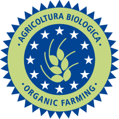

L'alimentazione biologica
 L'agricoltura biologica è un'agricoltura che guarda all'insieme dell'ecosistema agricolo favorendo ciò che è proprio del terreno e dela sua fertilità naturale senza utilizzare per la protezione né prodotti di sintesi né organismi geneticamente modificati. La forte differenza rispetto all'agricoltura cosidetta convenzionale sta proprio nel fatto che la biologia esclude proprio l'utilizzo di sostanze "non naturali" e osservando la conservazione della sostanza organica del terreno. Bisogna fare attenzione ad interpretare anche quanto detto. Chi lavora secondo allevamenti biologici non lo è solo per la mancanza di utilizzo di sostanze chimiche per la protezione del vigneto e del terreno, ma lo è anche in considerazione della volontà di ridurre l'impatto ambientale. Questo sostanzialmente significa che si cerca di abbassare al massimo tutte quelle azioni che potrebbero essere dannose non solo per la vite, ma anche per l'ecosistema tutto. Nella pratica agronomica il bio prevedere l'utilizzo di fertilizzanti organici; le rotazioni colturali e lavorazioni che salvaguardino la struttura del suolo. La lotta ai "nemici" delle piante, è fatta solo con materiale organico e con la tecniche molto naturali come la confusione sessuale o l'utilizzo di antaparassitari selezionati tra gli insetti stessi. Dal punto di vista legislativo bisogna ricordare che l'agricoltura biologica "nasce" con il *Reg. (CEE) n° 2092/91 relativo al metodo di produzione biologico di prodotti agricoli e all'indicazione di tale metodo sui prodotti agricoli e sulle derrate alimentari. Nel giugno del 2007 è stato adottato un nuovo regolamento CE per l'agricoltura biologica, Reg. (CE) n° 834/2007, che abroga i precedenti ed è relativo alla produzione biologica e all'etichettatura dei prodotti biologici sia di origine vegetale che animale (compresa l'acquacoltura).